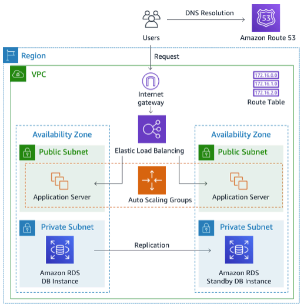

Amazon Aurora
Amazon Aurora is a cloud-native, PostgreSQL- and MySQL-compatible relational database engine designed to decouple compute from storage, effectively addressing the traditional monolithic constraints of relational databases. By offloading the logging and caching layers to a purpose-built, multi-tenant scale-out storage service, Aurora significantly reduces network I/O and overhead. This specialized storage architecture is self-healing and fault-tolerant, automatically replicating data six ways across three Availability Zones (AZs) to ensure 99.99% availability and high durability. Unlike standard RDS instances that rely on EBS volumes, Aurora utilizes a distributed, log-structured storage system that scales automatically up to 128 TiB (for MySQL) or 256 TiB (for PostgreSQL), eliminating the need for manual storage provisioning.

Figure 1: Amazon RDS application architecture.
For high-throughput workloads, Aurora delivers up to five times the throughput of standard MySQL and three times that of standard PostgreSQL. It supports up to 15 low-latency read replicas that share the same underlying storage as the primary instance, which minimizes replica lag to single-digit milliseconds and allows for near-instantaneous failover. Advanced features such as Aurora Global Database enable sub-second cross-region replication for globally distributed applications, providing both disaster recovery and low-latency local reads. Additionally, Aurora Serverless v2 offers fine-grained, instantaneous scaling to handle volatile traffic patterns without the operational burden of managing instance sizes. By automating undifferentiated heavy lifting—such as patching, backups, and point-in-time recovery—Aurora allows engineering teams to focus on schema design and query optimization while maintaining the performance and reliability of enterprise-grade commercial databases at a fraction of the cost.